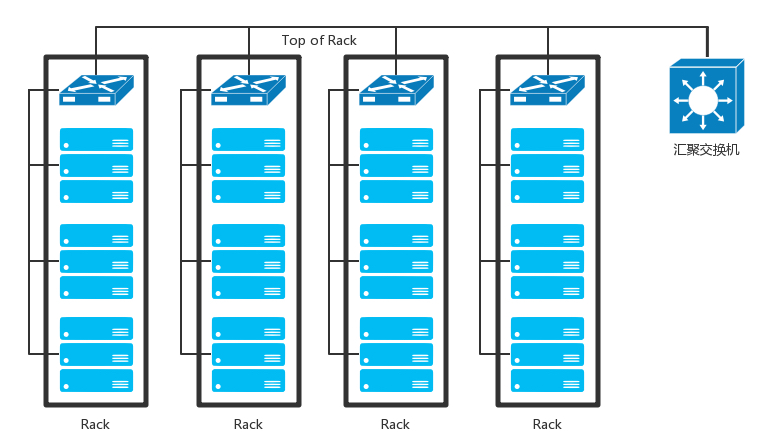
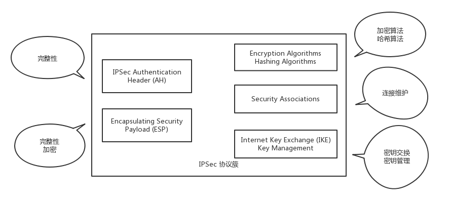
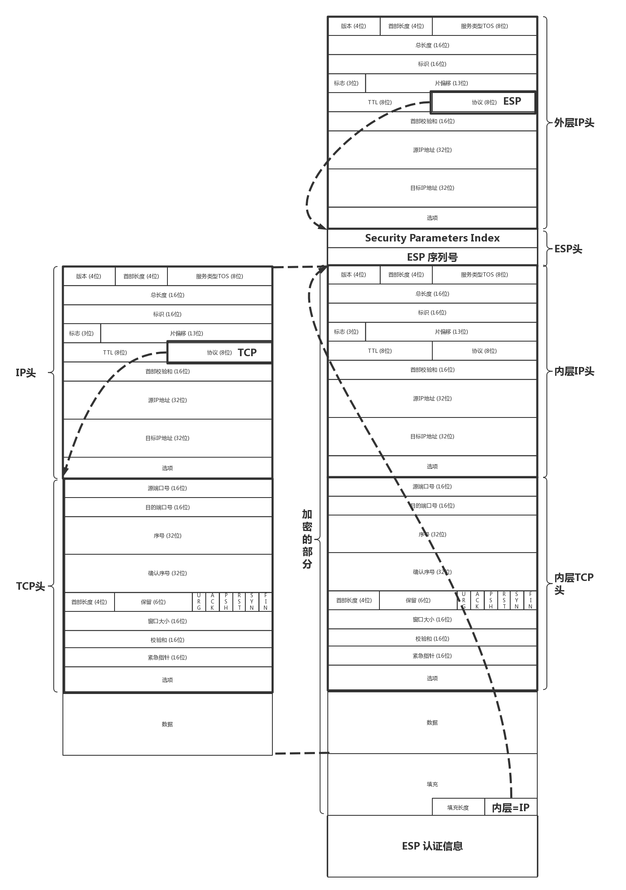
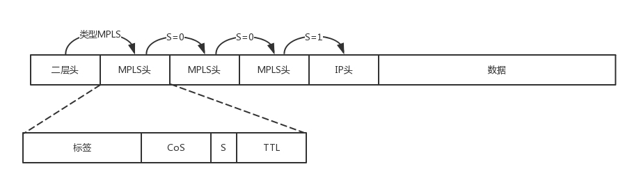
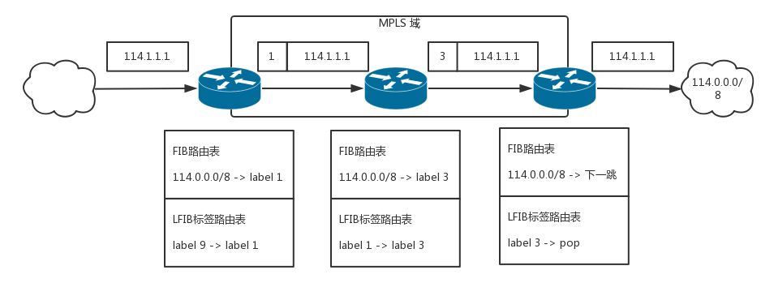
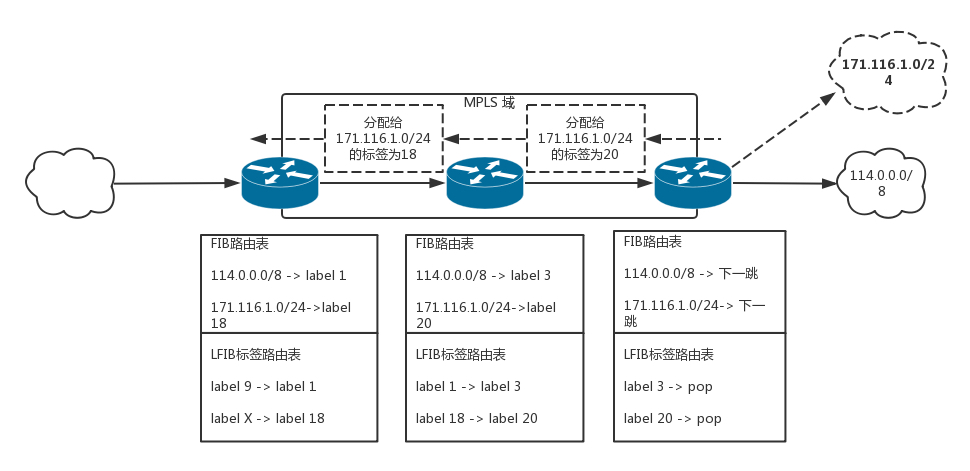
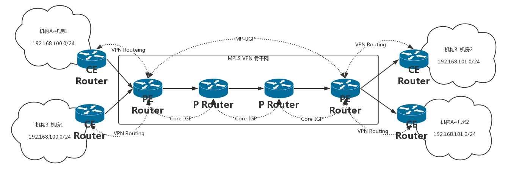

1. 数据中心#
数据中心里都是服务器，放在机架上(Rack)。数据中心的出口和入口也是路由器，多个边界路由器使其可用性更高。
为了高可用性，数据中心的边界路由器会连接多个运营商网络。
对于各个机架上的服务器，需要用交换机进行连接，TOR(Top of Rack)。

当一个机架放不下的时候，就需要多个机架，并使用交换机将多个机架连接起来。这些交换机称为汇聚层交换机。
数据中心的服务器需要有至少两个网卡，保证可用性。对网卡要进行网卡绑定的操作。
这就需要服务器和交换机都支持一种协议，LACP, Link Aggregation Control Protocol。互相通信，将多个网卡聚合成一个网卡，多个网线聚合成一个网线，在网线之间可以进行负载均衡，也可以为高可用作准备。

交换机有一种技术叫作堆叠，将多个交换机形成一个逻辑的交换机，服务器通过多根线分配连到多个接入层交换机上，而接入层交换机多根线分别连接到多个交换机上，并且通过堆叠的私有协议，形成双活的连接方式。

汇聚层将大量的节点相互连接在一起，形成了一个集群。在这个集群里面，服务器之间通过二层互通，这个区域成为一个POD(Point of Delivery)， 又称为可用区(Available Zone).
当节点数目再多的时候，一个可用区放不下，需要将多个可用区连在一起，连接多个可用区的交换机称为核心交换机。


2. VPN#

VPN(Virtual Private Network)， 虚拟专用网，就是利用开放的公众网络，建立专用数据传输通道，将远程的分支机构、移动办公人员连接起来。
2.1 VPN是如何工作的#
VPN通过隧道技术在公众网络上仿真一条点到点的专线，是通过一种协议来传输另外一种协议的技术：这里面涉及三种协议：乘客协议、隧道协议、承载协议。
以IPsec协议为例说明

IPsec VPN, 是基于IP协议的安全隧道协议，为了保证在公网上信息的安全，因而采取了一定的机制保证安全性。
2.2 VPN 采取的保证安全的机制#
- 私密性
通过加密把数据从明文编程无法读懂的密文，从而确保数据的私密性。采用对称加密， 因为VPN一旦建立，是需要传输大量数据的。
存在加密密钥如何传输的问题，这里需要用到因特网密钥交换协议(IKE, Internet Key Exchange)。
- 完整性
数据没有被非法篡改，通过对数据进行hash运算，产生类似于指纹的数据摘要，以保证数据的完整性
- 真实性
数据确实是由特定的对端发出，通过身份认证可以保证数据的真实性。
- 保证对方真实的方式
- 预共享秘钥
- 数字签名验证
2.3 IPsec VPN协议#

在这个协议族里面，有两种协议，区别在于封装网络 包的格式不一样。
- AH(Authentication Header)，只能进行数据摘要，不能实现数据加密
- ESP(Encapsulating Security Payload), 能够进行数据加密和数据摘要
在这个协议族里，有加密算法和摘要算法。包含了两大组件，一个用于VPN的双方要进行对称密钥交换的IKE组件，另一个是VPN的双方要对连接进行维护的SA(Security Association) 组件。
2.4 IPsec VPN 建立过程#
2.4.1 建立IKE自己的SA(Security Association)#
用来维护一个通过身份认证和安全保护的通道，为第二个阶段提供服务。通过DH(Diffie-Hellman)算法计算出一个对称密钥K。
DH算法很巧妙。客户端和服务端约定两个公开的质数p和q，然后客户端随机产生一个数a作为自己的私钥，服务端随机产生一个b作为自己的私钥，客户端可以根据p q a计算出公钥A，服务端根据p，q，b计算出公钥B，然后双方交换公钥A和B。
至此客户端和服务e端可以根据已有信息，各自独立算出相同的结果K，就是对称密钥。但是这个过程当中，对称密钥从来没有在通道上传输过，只传输了生成密钥的材料。截获的人根本无法算出到底是生成了什么数字。
2.4.2 建立IPsec SA#
在这个SA里面，双方会生成一个随机的对称密钥M，由K加密传给对方，然后使用M进行双方接下来通信的数据。对称密钥M是有过期时间的，会过一段时间，重新生成一次，从而防止被破解。
IPsec SA 里面有以下内容：
- SPI(Security Parameter Index),用于标识不同的连接
- 双方商量好的加密算法，哈希算法和封装算法
- 生存周期，超过这个周期，就要重新生成一个IPsec SA，重新生成对称密钥
当IPsec建立好，接下来就可以开始打包封装传输了。

左面是原始的 IP 包，在 IP 头里面，会指定上一层的协议为 TCP。ESP 要对 IP 包进行封装，因而 IP 头里面的上一层协议为 ESP。在 ESP 的正文里面，ESP 的头部有双方商讨好的 SPI，以及这次传输的序列号。
接下来全部是加密的内容。可以通过对称密钥进行解密，解密后在正文的最后，指明了里面的协议是什么。如果是 IP，则需要先解析 IP 头，然后解析 TCP 头，这是从隧道出来后解封装的过程。
有了 IPsec VPN 之后，客户端发送的明文的 IP 包，都会被加上 ESP 头和 IP 头，在公网上传输，由于加密，可以保证不被窃取，到了对端后，去掉 ESP 的头，进行解密。

这种点对点的基于 IP 的 VPN，能满足互通的要求，但是速度往往比较慢，这是由底层 IP 协议的特性决定的。IP 不是面向连接的，是尽力而为的协议，每个 IP 包自由选择路径，到每一个路由器，都自己去找下一跳，丢了就丢了，是靠上一层 TCP 的重发来保证可靠性。

因为 IP 网络从设计的时候，就认为是不可靠的，所以即使同一个连接，也可能选择不同的道路，这样的好处是，一条道路崩溃的时候，总有其他的路可以走。当然，带来的代价就是，不断的路由查找，效率比较差。
和 IP 对应的另一种技术称为 ATM。这种协议和 IP 协议的不同在于，它是面向连接的。你可以说 TCP 也是面向连接的啊。这两个不同，ATM 和 IP 是一个层次的，和 TCP 不是一个层次的。
另外，TCP 所谓的面向连接，是不停地重试来保证成功，其实下层的 IP 还是不面向连接的，丢了就丢了。ATM 是传输之前先建立一个连接，形成一个虚拟的通路，一旦连接建立了，所有的包都按照相同的路径走，不会分头行事。

ATM的好处是不需要每次都查路由表了，虚拟路径已经建立，打上了标签，后续的包跟着走就可以了；但是一旦虚拟路径上的某个路由器坏了，那么这个连接就断了.
2.4.3 多协议标签交换(MPLS, Multi-Protocol Label Switching)#
这种协议可以结合IP和ATM协议的优点，其结构是在原始的IP头之外，多了MPLS的头，里面可以打标签。

在 MPLS 头里面，首先是标签值占 20 位，接着是 3 位实验位，再接下来是 1 位栈底标志位，表示当前标签是否位于栈底了。这样就允许多个标签被编码到同一个数据包中，形成标签栈。最后是 8 位 TTL 存活时间字段，如果标签数据包的出发 TTL 值为 0，那么该数据包在网络中的生命期被认为已经过期了。
有了标签，还需要设备认这个标签，并且能够根据这个标签转发，这种能够转发标签的路由器称为标签交换路由器(LSR, Label Switching Router).
这种路由器会有两个表格，一个是传统的FIB，路由表，另外一个就是LFIB，标签转发表。有着这两个表，就既可以进行普通的路由转发，也可以进行基于标签的转发。

有了标签转发表，转发的过程如图所示，不需要每次都进行普通路由的查找了。
这里我们区分 MPLS 区域和非 MPLS 区域。在 MPLS 区域中间，使用标签进行转发，非 MPLS 区域，使用普通路由转发，在边缘节点上，需要有能力将对于普通路由的转发，变成对于标签的转发。
例如图中要访问 114.1.1.1，在边界上查找普通路由，发现马上要进入 MPLS 区域了，进去了对应标签 1，于是在 IP 头外面加一个标签 1，在区域里面，标签 1 要变成标签 3，标签 3 到达出口边缘，将标签去掉，按照路由发出。
这样一个通过标签转化而建立的路径称为LSP，标签交换路径。在一条LSP上，沿数据包传送的方向，相邻的LSR分别叫做上游LSR(upstream LSR), 和下游LSR(downstream LSR).
MPLS有个动态生成标签的协议, LDP(Label Distribution Protocol)。 其实 LDP 与 IP 帮派中的路由协议十分相像，通过 LSR 的交互，互相告知去哪里应该打哪个标签，称为标签分发，往往是从下游开始的。

如果有一个边缘节点发现自己的路由表中出现了新的目的地址，它就要给别人说，我能到达一条新的路径了。
如果此边缘节点存在上游 LSR，并且尚有可供分配的标签，则该节点为新的路径分配标签，并向上游发出标签映射消息，其中包含分配的标签等信息。
收到标签映射消息的 LSR 记录相应的标签映射信息，在其标签转发表中增加相应的条目。此 LSR 为它的上游 LSR 分配标签，并继续向上游 LSR 发送标签映射消息。
当入口 LSR 收到标签映射消息时，在标签转发表中增加相应的条目。这时，就完成了 LSP 的建立。有了标签，转发轻松多了，但是这个和 VPN 什么关系呢？
可以想象，如果我们 VPN 通道里面包的转发，都是通过标签的方式进行，效率就会高很多。所以要想个办法把 MPLS 应用于 VPN。

在MPLS VPN中，网络中的路由器分成以下几类：
- PE (Provider Edge): 运营商网络与客户网络相连的边缘网络设备
- CE (Customer Edge): 客户网络与PE相连接的边缘设备
- P (Provider): 指运营商网络中除了PE以外的其他运营商网络设备
为什么要这样分呢？因为我们发现，在运营商网络里面，也即 P Router 之间，使用标签是没有问题的，因为都在运营商的管控之下，对于网段，路由都可以自己控制。但是一旦客户要接入这个网络，就复杂得多。
首先是客户地址重复的问题。客户所使用的大多数都是私网的地址 (192.168.X.X;10.X.X.X;172.X.X.X)，而且很多情况下都会与其它的客户重复。
比如，机构 A 和机构 B 都使用了 192.168.101.0/24 网段的地址，这就发生了地址空间重叠（Overlapping Address Spaces）。
首先困惑的是 BGP 协议，既然 VPN 将两个数据中心连起来，应该看起来像一个数据中心一样，那么如何到达另一端需要通过 BGP 将路由广播过去，传统 BGP 无法正确处理地址空间重叠的 VPN 的路由。
假设机构 A 和机构 B 都使用了 192.168.101.0/24 网段的地址，并各自发布了一条去往此网段的路由，BGP 将只会选择其中一条路由，从而导致去往另一个 VPN 的路由丢失。
所以 PE 路由器之间使用特殊的 MP-BGP 来发布 VPN 路由，在相互沟通的消息中，在一般 32 位 IPv4 的地址之前加上一个客户标示的区分符用于客户地址的区分，这种称为 VPN-IPv4 地址族，这样 PE 路由器会收到如下的消息，机构 A 的 192.168.101.0/24 应该往这面走，机构 B 的 192.168.101.0/24 则应该去另外一个方向。
另外一个困惑是路由表，当两个客户的IP包到达PE的时候，PE就困惑了，因为网段是重复的。如何区分哪些路由是属于哪些客户 VPN 内的？如何保证 VPN 业务路由与普通路由不相互干扰？
在 PE 上，可以通过 VRF（VPN Routing&Forwarding Instance）建立每个客户一个路由表，与其它 VPN 客户路由和普通路由相互区分。可以理解为专属于客户的小路由器。
远端 PE 通过 MP-BGP 协议把业务路由放到近端 PE，近端 PE 根据不同的客户选择出相关客户的业务路由放到相应的 VRF 路由表中。
VPN报文转发采用两层标签的方式：
- 第一层（外层）标签在骨干网内部进行交换，指示从 PE 到对端 PE 的一条 LSP。VPN 报文利用这层标签，可以沿 LSP 到达对端 PE；
- 第二层（内层）标签在从对端 PE 到达 CE 时使用，在 PE 上，通过查找 VRF 表项，指示报文应被送到哪个 VPN 用户，或者更具体一些，到达哪一个 CE。这样，对端 PE 根据内层标签可以找到转发报文的接口。

举例说明MPLS VPN的包发送过程
- 机构 A 和机构 B 都发出一个目的地址为 192.168.101.0/24 的 IP 报文，分别由各自的 CE 将报文发送至 PE。
- PE 会根据报文到达的接口及目的地址查找 VPN 实例表项 VRF，匹配后将报文转发出去，同时打上内层和外层两个标签。假设通过 MP-BGP 配置的路由，两个报文在骨干网走相同的路径。
- MPLS 网络利用报文的外层标签，将报文传送到出口 PE，报文在到达出口 PE 2 前一跳时已经被剥离外层标签，仅含内层标签。
- 出口 PE 根据内层标签和目的地址查找 VPN 实例表项 VRF，确定报文的出接口，将报文转发至各自的 CE。
- CE 根据正常的 IP 转发过程将报文传送到目的地。
3. 移动网络#
研究下手机上网的场景：
3.1 2G网络#
2G时代上网不是使用的IP网络，而是电话网络，走模拟信号，叫做公共交换电话网(PSTN, Public Switched Telephone Network)
手机通过收发无线信号来通信，成为Mobile Station， 简称MS，需要嵌入SIM。手机是客户端，而无线信号的服务端，就是基站子系统(BBS, Base Station SubsystemBSS).
无论无线通信如何无线，最终还要连接到有线网络里。
因而，基站子系统分两部分，一部分对外提供无线通信，叫作基站收发信台（BTS，Base Transceiver Station），另一部分对内连接有线网络，叫作基站控制器（BSC，Base Station Controller）。基站收发信台通过无线收到数据后，转发给基站控制器。
这部分属于无线的部分，统称为无线接入网（RAN，Radio Access Network）。
基站控制器通过有线网络，连接到提供手机业务的运营商的数据中心，这部分称为核心网（CN，Core Network）。核心网还没有真的进入互联网，这部分还是主要提供手机业务，是手机业务的有线部分。
首先接待基站来的数据的是移动业务交换中心（MSC，Mobile Service Switching Center），它是进入核心网的入口，但是它不会让你直接连接到互联网上。
因为在让你的手机真正进入互联网之前，提供手机业务的运营商，需要认证是不是合法的手机接入。别你自己造了一张手机卡，就连接上来。鉴权中心（AUC，Authentication Center）和设备识别寄存器（EIR，Equipment Identity Register）主要是负责安全性的。
另外，需要看你是本地的号，还是外地的号，这个牵扯到计费的问题，异地收费还是很贵的。访问位置寄存器（VLR，Visit Location Register）是看你目前在的地方，归属位置寄存器（HLR，Home Location Register）是看你的号码归属地。
当你的手机卡既合法又有钱的时候，才允许你上网，这个时候需要一个网关，连接核心网和真正的互联网。网关移动交换中心（GMSC ，Gateway Mobile Switching Center）就是干这个的，然后是真正的互连网。在 2G 时代，还是电话网络 PSTN。
数据中心里的这些模块统称为网络子系统(NSS, Network and Switching Subsystem)

2G时代的上网，有几个核心点：
- 手机通过无线信号连接基站；
- 基站一面朝前接无线，一面朝后接核心网；
- 核心网一面朝前接到基站请求，一是判断你是否合法，二是判断你是不是本地号，还有没有钱，一面通过网关连接电话网络。
3.2 2.5G网络#
后来从 2G 到了 2.5G，也即在原来电路交换的基础上，加入了分组交换业务，支持 Packet 的转发，从而支持 IP 网络。
在上述网络的基础上，基站一面朝前接无线，一面朝后接核心网。在朝后的组件中，多了一个分组控制单元（PCU，Packet Control Unit），用以提供分组交换通道。
在核心网里面，有个朝前的接待员（SGSN，Service GPRS Supported Node）和朝后连接 IP 网络的网关型 GPRS 支持节点（GGSN，Gateway GPRS Supported Node）。

3.3 3G网络#
到了 3G 时代，主要是无线通信技术有了改进，大大增加了无线的带宽。
以 W-CDMA 为例，理论最高 2M 的下行速度，因而基站改变了，一面朝外的是 Node B，一面朝内连接核心网的是无线网络控制器（RNC，Radio Network Controller）。核心网以及连接的 IP 网络没有什么变化。

3.4 4G网络#

4G网络的协议相对复杂了很多：

3.4.1 控制面协议#
其中虚线部分是控制面的协议。当一个手机想上网的时候，先要连接 eNodeB，并通过 S1-MME 接口，请求 MME 对这个手机进行认证和鉴权。S1-MME 协议栈如下图所示。

UE是手机，eNodeB朝前对接无线网络，朝后对接核心网络，在控制面对接的是MME。
eNode与MME之间的连接是靠IP网络，而在IP层上，是用的SCTP。这是面向连接的传输层的协议，更适合移动网络。继承了TCP较为完善的拥塞控制，并改进了TCP的不足之处。
SCTP特点是多宿主，引入了联合的概念，将多个接口、多条路径放到一个association当中，当检测到一条路径失效时，协议就会从另外一条路径来发送通信数据。应用程序甚至不必知道发生了故障和恢复，从而提供更高的可用性和可靠性。
SCTP还可以将一个联合分成多个流。一个联合中的所有流都是独立的，但均与这个联合相关。每个流都给定了一个流编号，被编码到SCTP报文当中，通过联合在网络上传送。在TCP的机制当中，由于强制顺序，导致前一个不到达，后一个就得等待，SCTP的多个流不会相互阻塞。
SCP还可以进行四次握手，防止 SYN 攻击。在 TCP 中是三次握手，当服务端收到客户的 SYN 之后，返回一个 SYN-ACK 之前，就建立数据结构，并记录下状态，等待客户端发送 ACK 的 ACK。当恶意客户端使用虚假的源地址来伪造大量 SYN 报文时，服务端需要分配大量的资源，最终耗尽资源，无法处理新的请求。
SCTP 可以通过四次握手引入 Cookie 的概念，来有效地防止这种攻击的产生。在 SCTP 中，客户机使用一个 INIT 报文发起一个连接。服务器使用一个 INIT-ACK 报文进行响应，其中就包括了 Cookie。然后客户端就使用一个 COOKIE-ECHO 报文进行响应，其中包含了服务器所发送的 Cookie。这个时候，服务器为这个连接分配资源，并通过向客户机发送一个 COOKIE-ACK 报文对其进行响应。
SCTP还可以对信息进行分帧。TCP是面向流的，即发送的数据没头没尾，没有明显的界限。这对于发送数据没有什么大问题，但是对于发送一个个消息类型的数据，就不太方便了。有可能客户端写入10个字节，再写入20个。服务端不是按照10-20来读的，而是先25个字节，再读入5个字节，需要业务层去组合成消息。
SCTP借鉴了UDP的机制，在数据传输中提供了消息分帧功能。当一端对一个套接字执行写操作时，可确保对等端读出的数据大小与此相同。
SCTP在断开连接的时候是三次挥手。在TCP里面，断开连接是四次挥手，云溪另一端处于半关闭的状态。SCTP选择放弃这种状态，当一端关闭自己的套接字的时候，对等的两端全部需要关闭，将来任何一端都不允许再进行数据的移动了。
当 MME 通过认证鉴权，同意这个手机上网的时候，需要建立一个数据面的数据通路。建立通路的过程还是控制面的事情，因而使用的是控制面的协议 GTP-C。
建设的数据通路分两段路，其实是两个隧道。一段是从 eNodeB 到 SGW，这个数据通路由 MME 通过 S1-MME 协议告诉 eNodeB，它是隧道的一端，通过 S11 告诉 SGW，它是隧道的另一端。第二端是从 SGW 到 PGW，SGW 通过 S11 协议知道自己是其中一端，并主动通过 S5 协议，告诉 PGW 它是隧道的另一端。
GTP-C协议是基于UDP的，如果看GTP的头，可以看到里面有隧道的ID还有序列号。

3.4.2 数据面协议#
当两个隧道都打通，接在一起的时候，PGW 会给手机分配一个 IP 地址，这个 IP 地址是隧道内部的 IP 地址，可以类比为 IPsec 协议里面的 IP 地址。这个 IP 地址是归手机运营商管理的。然后，手机可以使用这个 IP 地址，连接 eNodeB，从 eNodeB 经过 S1-U 协议，通过第一段隧道到达 SGW，再从 SGW 经过 S8 协议，通过第二段隧道到达 PGW，然后通过 PGW 连接到互联网。
数据面的协议通过GTP-U, 如图所示：

手机每发出一个包，都由GTP-U隧道协议封装起来：
和 IPsec 协议很类似，分为乘客协议、隧道协议、承载协议。其中乘客协议是手机发出来的包，IP 是手机的 IP，隧道协议里面有隧道 ID，不同的手机上线会建立不同的隧道，因而需要隧道 ID 来标识。承载协议的 IP 地址是 SGW 和 PGW 的 IP 地址。
3.4.3 手机上网流程#
Attach:

- 手机开机以后，在附近寻找基站 eNodeB，找到后给 eNodeB 发送 Attach Request，说“我来啦，我要上网”。
- eNodeB 将请求发给 MME，说“有个手机要上网”。
- MME 去请求手机，一是认证，二是鉴权，还会请求 HSS 看看有没有钱，看看是在哪里上网。
- 当 MME 通过了手机的认证之后，开始分配隧道，先告诉 SGW，说要创建一个会话（Create Session）。在这里面，会给 SGW 分配一个隧道 ID t1，并且请求 SGW 给自己也分配一个隧道 ID。
- SGW 转头向 PGW 请求建立一个会话，为 PGW 的控制面分配一个隧道 ID t2，也给 PGW 的数据面分配一个隧道 ID t3，并且请求 PGW 给自己的控制面和数据面分配隧道 ID。
- PGW 回复 SGW 说“创建会话成功”，使用自己的控制面隧道 ID t2，回复里面携带着给 SGW 控制面分配的隧道 ID t4 和控制面的隧道 ID t5，至此 SGW 和 PGW 直接的隧道建设完成。双方请求对方，都要带着对方给自己分配的隧道 ID，从而标志是这个手机的请求。
- 接下来 SGW 回复 MME 说“创建会话成功”，使用自己的隧道 ID t1 访问 MME，回复里面有给 MME 分配隧道 ID t6，也有 SGW 给 eNodeB 分配的隧道 ID t7。
- 当 MME 发现后面的隧道都建设成功之后，就告诉 eNodeB，“后面的隧道已经建设完毕，SGW 给你分配的隧道 ID 是 t7，你可以开始连上来了，但是你也要给 SGW 分配一个隧道 ID”。
- eNodeB 告诉 MME 自己给 SGW 分配一个隧道，ID 为 t8。
- MME 将 eNodeB 给 SGW 分配的隧道 ID t8 告知 SGW，从而前面的隧道也建设完毕。
3.4.4 异地上网问题#
为什么要分 SGW 和 PGW 呢，一个 GW 不可以吗？SGW 是你本地的运营商的设备，而 PGW 是你所属的运营商的设备。如果你在巴塞罗那，一下飞机，手机开机，周围搜寻到的肯定是巴塞罗那的 eNodeB。通过 MME 去查寻国内运营商的 HSS，看你是否合法，是否还有钱。如果允许上网，你的手机和巴塞罗那的 SGW 会建立一个隧道，然后巴塞罗那的 SGW 和国内运营商的 PGW 建立一个隧道，然后通过国内运营商的 PGW 上网。

这样判断你是否能上网的在国内运营商的 HSS，控制你上网策略的是国内运营商的 PCRF，给手机分配的 IP 地址也是国内运营商的 PGW 负责的，给手机分配的 IP 地址也是国内运营商里统计的。运营商由于是在 PGW 里面统计的，这样你的上网流量全部通过国内运营商即可，只不过巴塞罗那运营商也要和国内运营商进行流量结算。
由于你的上网策略是由国内运营商在 PCRF 中控制的，因而你还是上不了脸书。